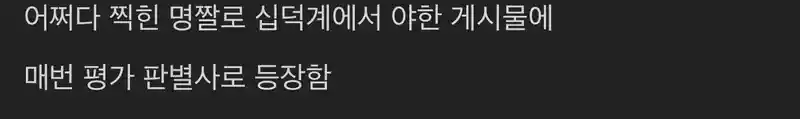

142 · 6 · 19 시간 전 · 원문

유튜버시고.. 채널 이름이 ○질의 추억 입니다
수집 당시 댓글 6개
깬다영포티뚝배기 · 14 시간 전
오입질의추억이다!!
햇빛한바구니고양이두스푼 · 12 시간 전
아씨 ㅋㅋㅋㅋㅋㅋㅋㅋㅋ
아야해 · 7 시간 전
미쳤네 ㅋㅋㅋㅋㅋ
2시49분 · 8 시간 전
흑요석 · 6 시간 전
암컷아저씨
위치 · 2 시간 전


오입질의추억이다!!